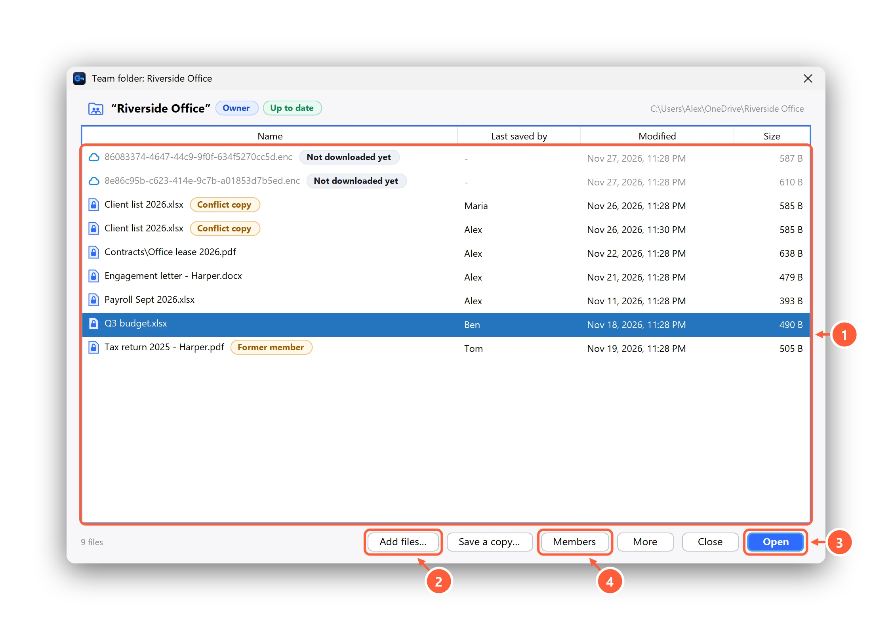
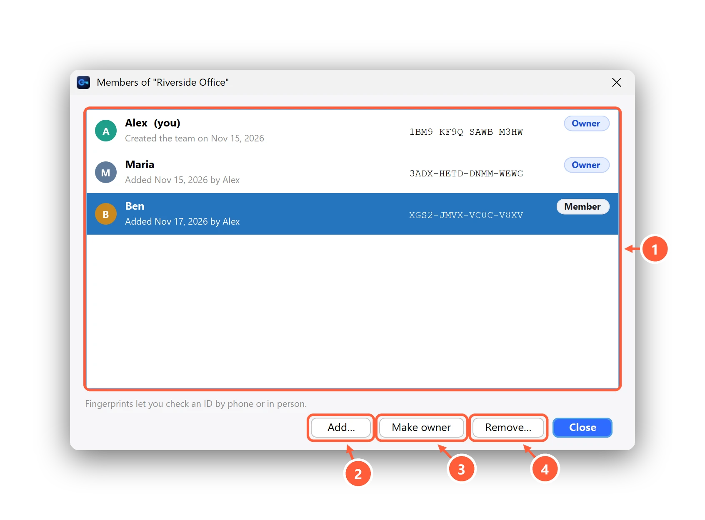

Share one encrypted folder with your team
A team folder is one folder that several people open, each with their own Clavis ID.
There's no shared password and no Clavis server: keep the folder in OneDrive, Google Drive, Dropbox or a shared network drive and share it
there as usual. Clavis encrypts the files and keeps a small, signed member list in a subfolder named
Clavis team (do not delete).
Creating a team folder and adding people is part of Clavis Premium (one licence can own up to 3 team folders, and a team can have up to 10 members and 3 owners). Joining, opening files, saving a copy, exporting everything, adding single files and removing people work on every plan. Editing a file in place needs Clavis Pro.
Create a team folder (owner)
- Open Sharing in the sidebar and choose the Team folders tab.
- Press Create a team folder…, choose the folder and give the team a name. Anyone who can see the folder can see that name, so keep it general.
- If the folder already holds files, Clavis offers to encrypt them for the team. Your cloud service may keep the earlier, unencrypted versions in its version history or recycle bin: delete them there if they matter.
- Press Add members… and add each person from your contacts, the clipboard or their
.clavisidfile. Ask them to read their fingerprint to you, and add them only if it matches. - Share the folder with them in OneDrive, Google Drive or Dropbox. Clavis can't do this part for you.
Join a team folder (member, free)
Once the folder is shared with you and has synced, open Sharing → Team folders → Join a team folder… and pick it. Clavis shows the owner who added you and their fingerprint: ask them to read it to you, and join only if it matches. If you haven't been added yet, Clavis shows your own fingerprint and a Copy my ID button to send to the owner.
Working in the folder

- Real names, who saved last, conflict copies and files not downloaded yet
- Add encrypted copies for the whole team
- Open and edit; changes are saved for the team (Pro)
- See members and fingerprints; owners add and remove people
- Add files… (or drag files onto the window) puts encrypted copies into the team folder; your originals stay where they were. Encrypting a file that's already in the team folder, from the main window or File Explorer, also encrypts it for the team.
- Open (Clavis Pro) opens a file in its usual program; when you save, Clavis saves it back for the team, signed by you. If someone else saved it while you had it open, your version becomes a second copy, so nothing is lost. Both show as Conflict copy: compare them and delete the one you don't need.
- Save a copy… and More → Export everything… save decrypted copies outside the team folder. Decrypt never works inside a team folder: that would upload the original to everyone and delete the encrypted file.
- Files your cloud hasn't downloaded yet show as Not downloaded yet, without their name; opening one downloads it first.
- Every file is signed by whoever saved it last. A file that fails the check shows as Can't open.
Removing someone
Owners open Members, choose the person and press Remove…. From then on, new and changed files are locked with a new team key that person doesn't have.

- Each person's role and fingerprint
- Add someone from your contacts or their Clavis ID (Premium)
- Make someone an owner: they can add and remove people too
- Remove someone: new and changed files get a new team key
What the status means
| Status | What it means |
|---|---|
| Up to date | Nothing to do. |
| Waiting for sync | Some changes to the member list haven't synced to this PC yet. Files still open. |
| Saving paused | Two owners changed the members at the same time. Saving waits until an owner opens the folder (owners can press Fix it now). |
| Check needed | Someone changed the member list without an owner's signature, or a removed owner tried to. Clavis ignored it; remove their access to the folder. |
| Repaired | The member list in the folder was older than this PC's, or was deleted. Clavis put it back. |
| Stopped | The folder's team information was replaced. Clavis won't add or save files there until an owner checks it. |
| Removed | You were removed. Files from before still open; newer ones don't. |
Good to know
- The member list (names and public Clavis IDs), the team name, file sizes, dates and subfolder names are visible to anyone who can see the folder.
- New members can open every file in the folder, including older ones.
- If everyone loses their Clavis ID (no recovery key, no vault backup), the files can't be opened: there's no master key.
- The command line doesn't work inside team folders yet, and the open-source decryptor can't open team files; use Export everything in Clavis. Like the rest of Clavis, team folders haven't had an independent audit yet.
Can't find what you need? All help articles · Email us